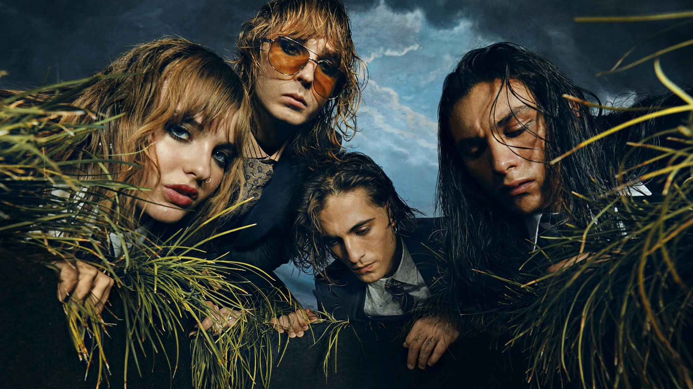
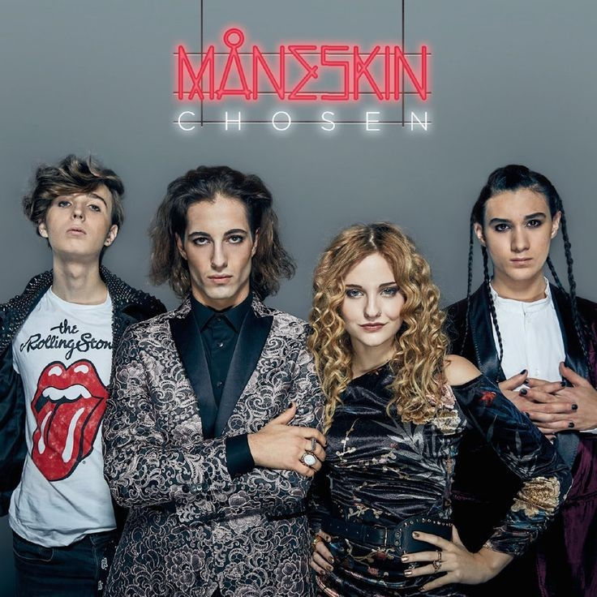
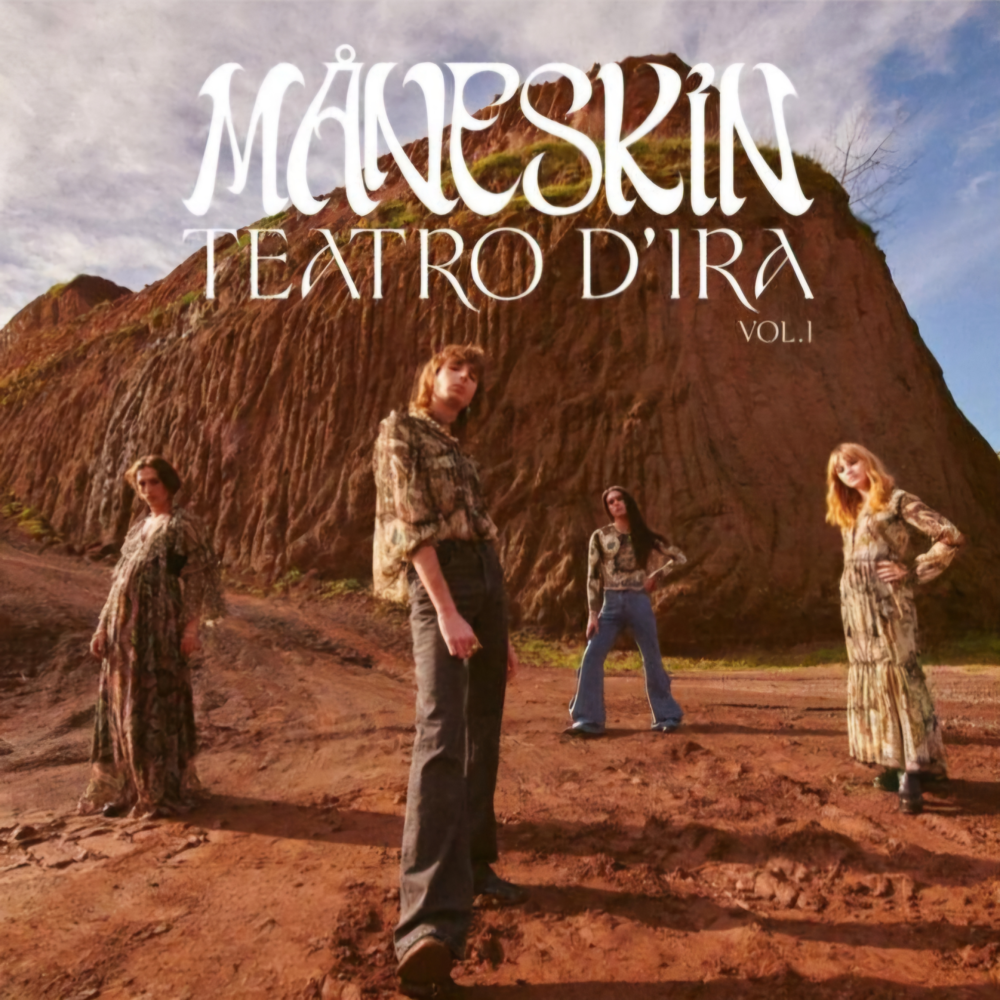
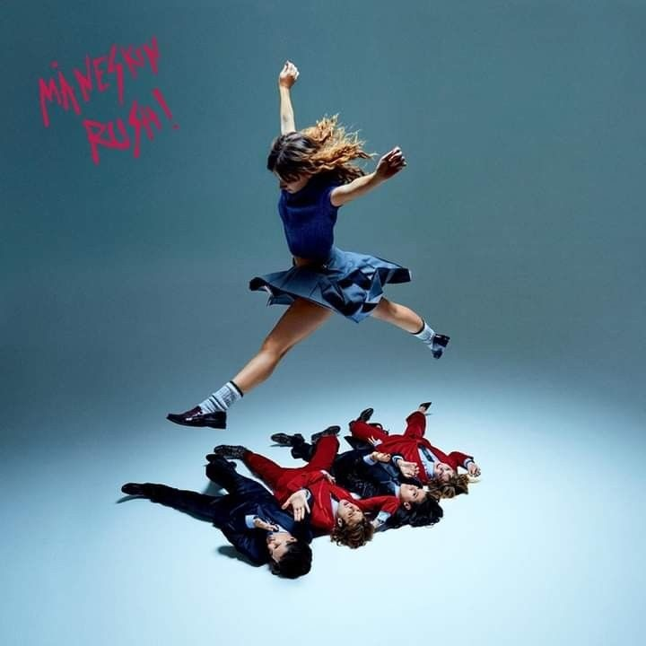

Måneskin
20.399.010 ouvintes mensais
Seguir
Populares
1

Beggin'
1.781.932.202
3:31
2

I WANNA BE YOUR SLAVE
1.203.412.545
2:53
3

GOSSIP (feat. Tom Morello)
314.172.811
2:48
4
THE LONELIEST
379.605.078
4:07
5
BABY SAID
209.932.626
2:44
6
ZITTI E BUONI
513.769.773
3:14
7
SUPERMODEL
346.514.982
2:28
8
HONEY (ARE U COMING?)
158.875.356
2:47
9
MAMMAMIA
191.733.272
3:06
10
CORALINE
248.950.094
5:00
Músicas Curtidas
Discografia
Album 1
Album 2